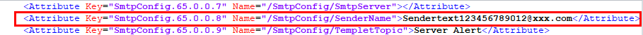

Function Description
On the Configuration Update page, you can import and export BMC, BIOS, and RAID controller card configuration files.

- Only the administrator can information and export configuration files. The configuration file to be imported or exported is in the .xml format. The size cannot exceed 1 MB.
- If KVM is enabled, the KVM encryption settings cannot be imported. There is no such restriction on other features.
- RAID controller card configurations take effect only after the system power-on self-test (POST) is complete.
- If the configuration items imported involve change of the TLS version or network configuration, the established web connections will be disconnected. If "Import failed" is displayed, log in to the BMC WebUI again and check the operation log to determine whether the import is successful.
- When the exported configuration file contains configuration in ciphertext by default, the configuration in ciphertext does not take effect if the configuration file is imported to another server. To make the configuration take effect, you need to modify the configuration in plain text, delete the comment tags from the line, and then import the configuration file.
- In the configuration file exported, the BMC management network port IP address is commented out.
- The BMC configuration, BIOS configuration, and some RAID controller configuration can be imported and exported.
Importing a Configuration File

Importing configuration files is a high-risk operation. Exercise caution when performing this operation.
- (Optional) Modify the configuration file.
- Use a text editor to open the configuration file, and locate the configuration to be modified.
- Modify the configuration.
For example, change the value of SenderName from ******, as shown in Figure 1, to Sendertext123456789012@xxx.com.
- Delete "<!--" at the begging of the line and "-->" at the end of the line.Figure 2 Configuration file after editing
 - Save and close the configuration file.
- Click Select File and select the configuration file to be uploaded.
The file uploaded will be displayed on the page.
The configuration file to be imported is in the .xml format. The size cannot exceed 1 MB.
- Click Import.
A confirmation dialog box is displayed, prompting you to enter the current user password.
- Enter the current user password and click OK.
The following information is displayed:
The import is successful. The BIOS configuration takes effect only after the service system is restarted.
- The BMC configuration and RAID controller configuration take effect immediately after being imported.
- After the BIOS configuration is imported, you need to restart the server OS for the configuration to take effect.
- If you select Restart later, you can restart the server OS at a proper time.
- If you select Restart Now, the Power Control page will be displayed. You can select the right way to restart the server OS.
Of the RAID controller configuration, only the configuration of Copyback, Copyback on SMART Error, and JBOD can be imported. The configuration of the logical and physical drives cannot be imported.

Exporting Configuration Files
- On the Configuration Update page, click Export.
The configuration file is exported and saved to the default directory of the local PC.